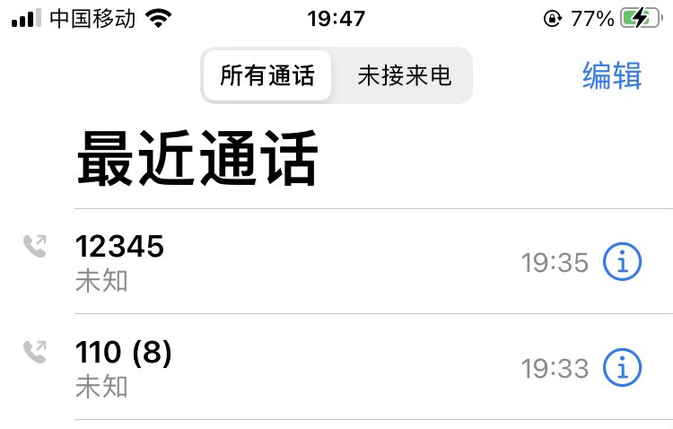

cafe114
@zhiii_tan
RT @yang_caiying: 紧急请求大家帮忙报警：我妈许冬青因遭中共迫害，于昨天上午6点25分不幸离世。
刚刚、我畜生舅舅许留洪，受金坛政法委官员指令、在我妈灵堂上疯狂用凳子砸我父杨国良头。现我父失去意识，太阳穴、口内均严重出血，面临生命危险。我妹从18:58分钟开始…

Yang caiying
@yang_caiying
紧急请求大家帮忙报警：我妈许冬青因遭中共迫害，于昨天上午6点25分不幸离世。
刚刚、我畜生舅舅许留洪，受金坛政法委官员指令、在我妈灵堂上疯狂用凳子砸我父杨国良头。现我父失去意识，太阳穴、口内均严重出血，面临生命危险。我妹从18:58分钟开始无数次报警、但金坛公安一直拒不出警。 https://t.co/i0X1ZE5RK3 https://t.co/n0Cm2BGZe9